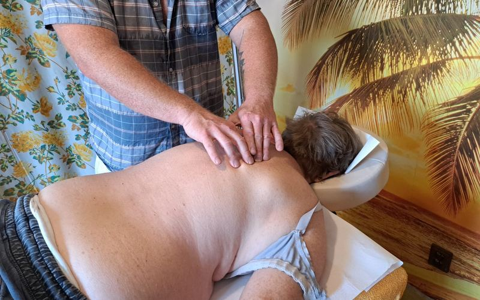
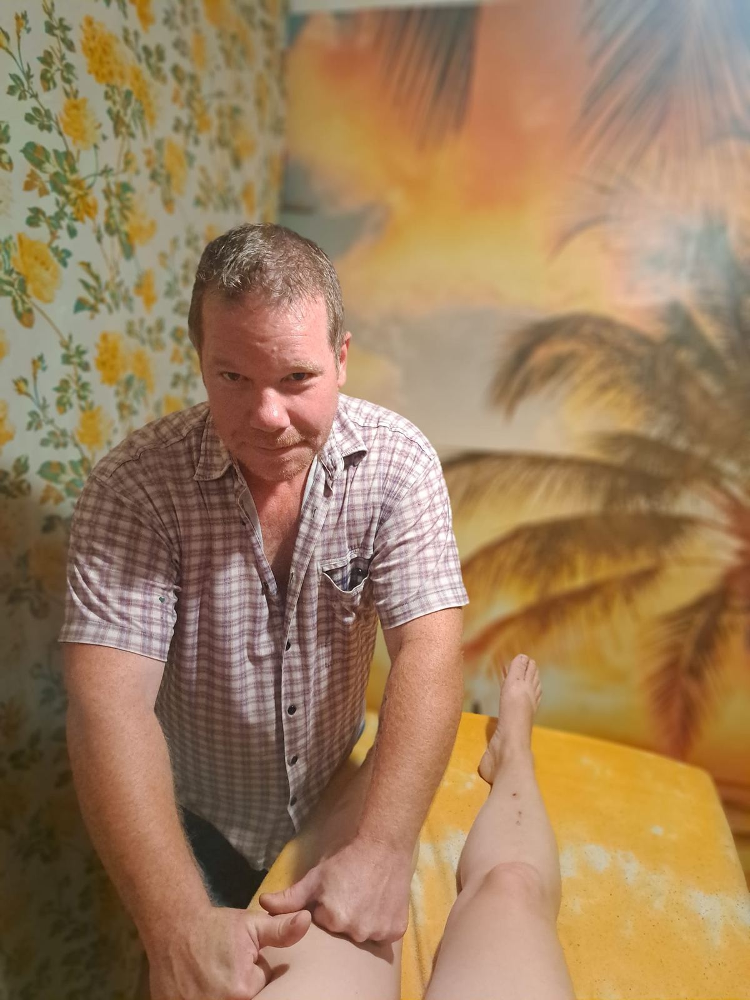
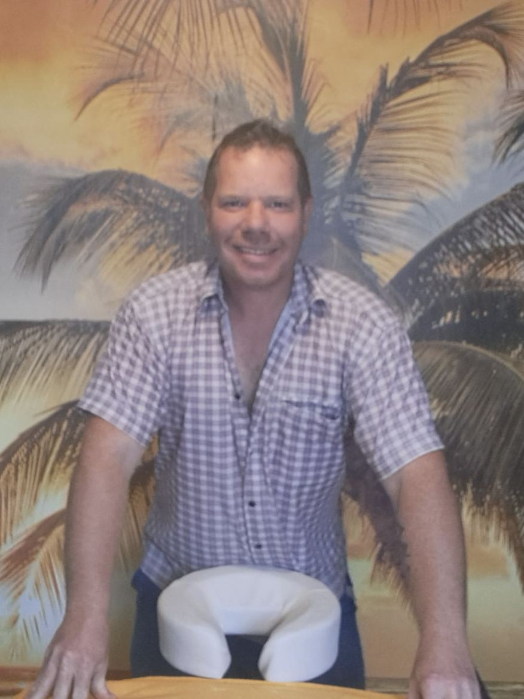
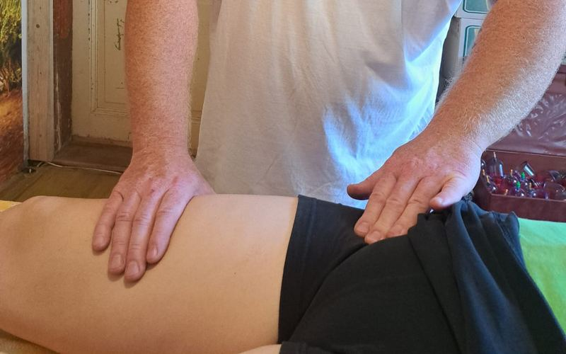
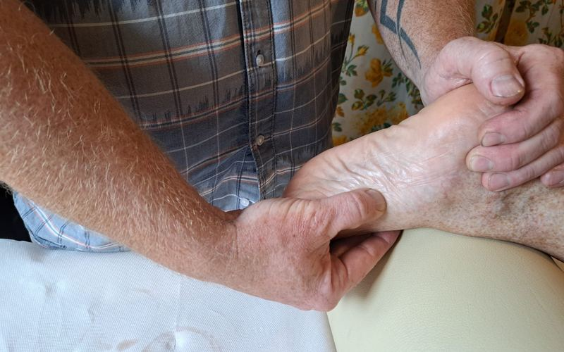
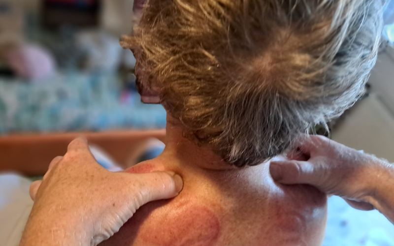
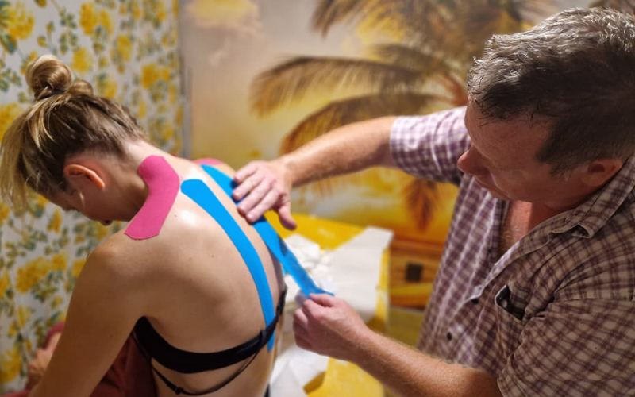
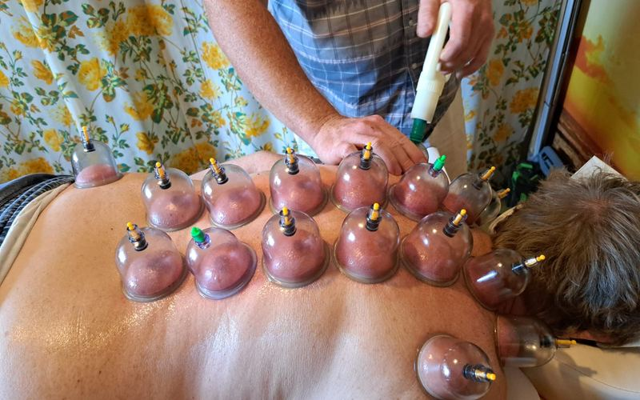
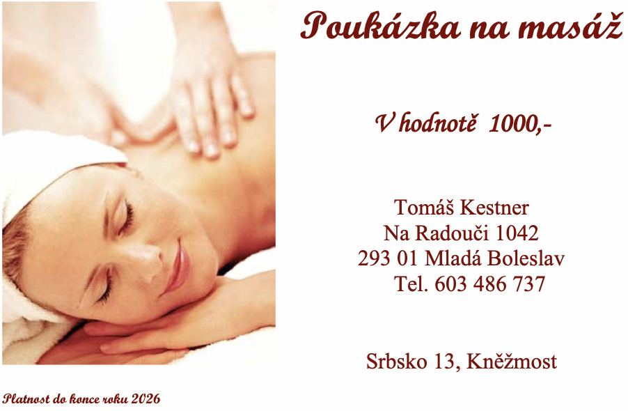
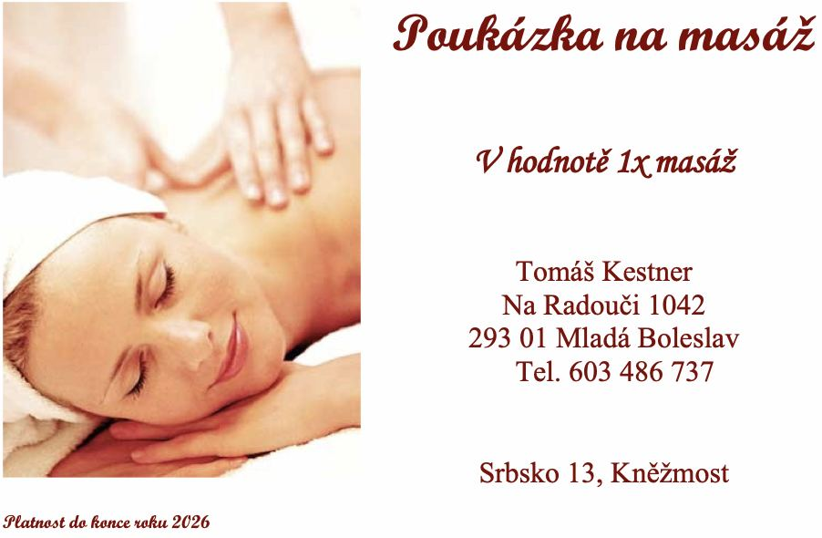

Klasické masáže
Uvolnění bolavých zad a ramen po dlouhém sezení u počítače.
1000 Kč / 35 minut
20 let praxe, 7 z toho u profesionálního fotbalu. Trakce, tlak a měkké techniky na spazmy, triggerpointy a zkrácené svaly. Není to relaxační procedura, ale řešení příčiny.

„Najdi a povol“ je kombinace mnohaletých zkušeností a výběru z různých hmatů (trakce, tlak, měkké techniky), které použiju přesně podle toho, co je zrovna potřeba. Cílená práce na konkrétní spazmus nebo triggerpoint, dokud skutečně nezmizí.
Palpací najdu přesný triggerpoint nebo zkrácený sval, který omezuje pohyb.
Kombinace trakčně-tlakové techniky a měkkých technik podle toho, co bolístka potřebuje.
Intenzitu a přístup přizpůsobím konkrétnímu tělu, ne šabloně z učebnice.
Tělo se časem přirozeně dostává do nerovnováhy. Některé svaly se zkracují, jiné naopak ochabují. Mojí úlohou je tuto nerovnováhu najít a pomoci ji odstranit. Aby ale výsledek vydržel dlouhodobě, je důležité, abyste na svém těle pracovali i vy.
Tomáš Kestner
Masérství se věnuji od roku 2004, takže mám přes 20 let praxe. Sedm let jsem pečoval o hráče FK Mladá Boleslav a zároveň jsem pracoval se svými soukromými klienty. Práce s profesionálními fotbalisty mě naučila jednat rychle a přesně. Hráč nemá čas na dlouhou regeneraci, potřebuje se co nejdříve vrátit na hřiště. Tyto zkušenosti dnes využívám u každého, kdo přijde s bolestí zad, ramen nebo se zkrácenými svaly. Baví mě najít skutečnou příčinu potíží a zaměřit se na místo, které bývá často přehlíženo.
20+ let praxe
Objednat masáž

Uvolnění bolavých zad a ramen po dlouhém sezení u počítače.
1000 Kč / 35 minut

Ruční lymfodrenáž: úleva od otoků a těžkých nohou, sportovcům zvedá výkonnost až o 10 %.
1000 Kč / 35 minut

Tlakem na reflexní bod na chodidle ovlivním konkrétní místo jinde v těle, podle staré čínské nauky o akupunkturních bodech.
1000 Kč / 35 minut

Šetrné uvolnění bolavých a ztuhlých míst.
1000 Kč / 35 minut

Podpora svalu nebo kloubu kineziopáskou, která vydrží i při tréninku.

Slouží k prokrvení a uvolnění hlubokých svalových vrstev pomocí baněk.
1000 Kč / 35 minut
Nevíte, jaký dárek vybrat? Poukaz vystavím buď na konkrétní částku, nebo na počet masáží, a službu si vybere sám příjemce.


Slova klientů po masáži. Doplňujeme je průběžně. Každá reference je od reálného klienta.
REFERENCE K DOPLNĚNÍ 1
REFERENCE K DOPLNĚNÍ 2
REFERENCE K DOPLNĚNÍ 3
REFERENCE K DOPLNĚNÍ 4
REFERENCE K DOPLNĚNÍ 5
REFERENCE K DOPLNĚNÍ 6
Provozovna a technika „najdi a povol“ v akci: bez stock fotek, jen reálné prostředí.
Termín domlouváme individuálně po telefonu.